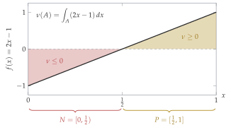
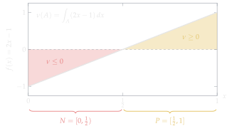

10 Signed Measures, Jordan–Hahn Decomposition, and Mutual Singularity
So far, we have discussed nonnegative measures. But can we also introduce a well-defined concept of a signed measure? Indeed we can.
We compare this to the definition of a measure. First, note the additional criterion (ii), and the additional comment in (iii) that the RHS converges absolutely when the LHS is finite. The reason is related to what we discussed earlier, namely that there is no intrinsic ordering of the elements of the set, and consequently, neither should the measure of the union depend on that ordering. Absolute convergence is thus required.
For unsigned series, conditional convergence is not possible, so either the series is absolutely convergent or diverges to \(+\infty\). For signed measures, we can have conditional convergence. Therefore whenever the LHS is finite, we require the RHS to converge absolutely: the union \(\bigcup_i A_i\) does not depend on the order in which we list the \(A_i\), but the value of a conditionally convergent series does, as the side topic below shows.
Side topic: The Riemann rearrangement theorem
The Riemann rearrangement theorem says that if a real series \(\sum_n a_n\) converges but not absolutely, then for every \(L \in [-\infty, \infty]\) there is a rearrangement \(\sigma\) of \(\mathbb N\) such that \[\sum_{n=1}^\infty a_{\sigma(n)} = L.\]
The idea of the proof is simple. Since the series converges conditionally, \(a_n \to 0\), while the positive terms alone sum to \(+\infty\) and the negative terms alone sum to \(-\infty\). To reach a finite \(L\), take positive terms until the partial sum first exceeds \(L\), then negative terms until it first drops below \(L\), then positive terms again, and so on. Every term is eventually used, and since \(a_n \to 0\) the overshoots shrink, so the partial sums converge to \(L\).
A concrete example is the alternating harmonic series, \[1 - \tfrac12 + \tfrac13 - \tfrac14 + \tfrac15 - \cdots = \ln 2.\] Taking one positive term followed by two negative terms gives \[\Big(1 - \tfrac12\Big) - \tfrac14 + \Big(\tfrac13 - \tfrac16\Big) - \tfrac18 + \cdots = \tfrac12 - \tfrac14 + \tfrac16 - \tfrac18 + \cdots = \tfrac12 \ln 2,\] the same terms with half the sum.
Absolutely convergent series behave well: every rearrangement converges to the same value. This is why condition (iii) of Definition 10.1 asks for absolute convergence. If \(\nu(A_i) = a_i\) for disjoint sets \(A_i\), relabelling the sets does not change their union, so it must not change \(\sum_i \nu(A_i)\) either.
Some remarks that follow from the definition:
- A measure is a signed measure.
- If \(\mu_1, \mu_2\) are finite measures (or at least one is finite) then \(\mu_1-\mu_2\) is a signed measure.
- Condition (ii) is there to avoid having \(\infty - \infty\). For example if \(A, B\) are disjoint sets where \(\nu(A) = \infty\) and \(\nu(B) = -\infty\) then \(\nu(A \bigcup B)\) is undefined.
So far, a signed measure can feel somewhat uncomfortable, especially if we have made ourselves comfortable with the idea that a measure is something that assigns volumes to sets. However, it differences of measures turn out to be very common, and a difference of (finite) measures produces a signed measure, as shown below.
It turns out that every signed measure has the form \(\mu_1 - \mu_2\), both being measures with at least one being finite. This is the Jordan Decomposition Theorem. Before that, we first prove the Hahn Decomposition Theorem.


By definition we have \(A \Delta B = (A \setminus B) \cup (B \setminus A)\) which are the points which belong to exactly one of the two sets \(A\) and \(B\). In other words, given a signed measure space, we can cleanly partition our \(X\) into a positive and negative measurable part, and this decomposition is unique up to nullsets.
This is different from the two facts we mentioned earlier. The lemma says that we only know that the measure of \(A\) is positive, not that it is a positive set. However, it does guarantee that we can always find a subset of \(A\) which is positive.
The measure \(\nu^+ + \nu^-\) is called the total variation of \(\nu\) and is denoted by \(|\nu|\). The Jordan decomposition theorem is essentially a corollary of the Hahn decomposition theorem where we define \(\nu^\pm\) as the restriction of \(\nu\) to \(P\) (+) \(N\) (-) respectively. This is similiar to the decomposition of a function \[f(x) = \max(f(x), 0) - \max(-f(x), 0) \equiv f^+(x) - f^-(x)\]